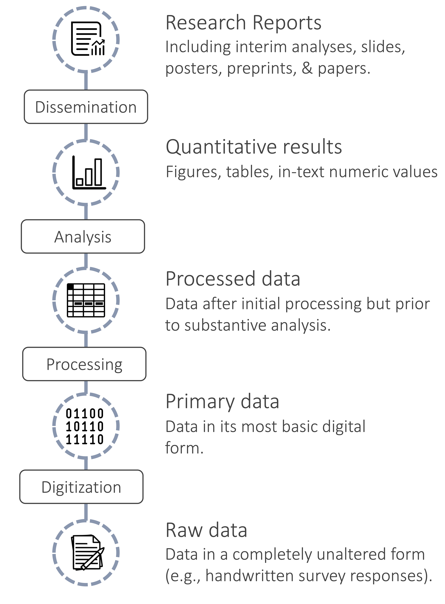
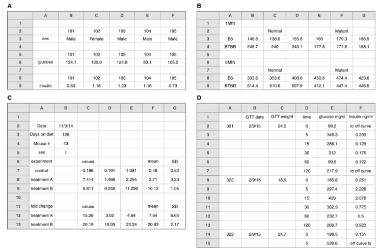
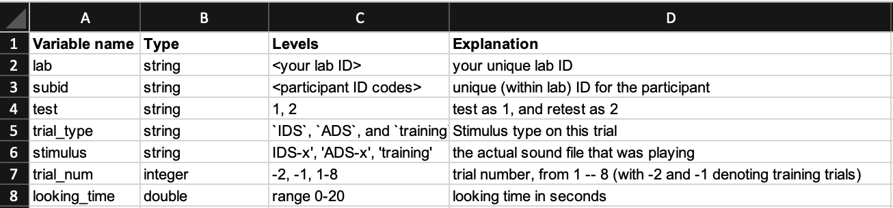

Chapter 15 Project management
::: {.learning-goals} 🍎 Learning goals:
- Learn how to manage your research projects efficiently and transparently
- Describe important elements of version control
- Optimize sharing of research products, like data and analysis code, by ensuring they are Findable, Accessible, Interoperable, Reusable (FAIR)
- Understand potential ethical constraints on sharing research products :::twee
Your closest collaborator is you six months ago, but you don’t reply to emails.
 Figure 15.1: Poor file management creates chaos! By xkcd (https://xkcd.com/1459). Shared under CC BY-NC 2.5
Figure 15.1: Poor file management creates chaos! By xkcd (https://xkcd.com/1459). Shared under CC BY-NC 2.5
Have you ever returned to an old project folder to find a chaotic mess of files with names like analysis-FINAL, analysis-FINAL-COPY, and analysis-FINAL-COPY-v2? Which file is actually the final version!? Or perhaps you’ve spent hours searching for a data file to send to your advisor, only to realize with horror that it was only stored on your old laptop — yes, the one that experienced a catastrophic hard drive failure when you spilled coffee all over it one sleepy Sunday morning. These experiences may make you sympathetic to Karl Broman’s quip: good project management practices not only make it easier to share your research with others, they also make for a more efficient and less error prone workflow that will avoid giving your future-self a headache. This chapter is about the process of managing all of the products of your research workflow — methodological protocols, materials 167 ‘Materials’ covers a range of things another research might need to successful repeat your study, for example, stimuli, survey instruments, or code for computer-based experiments, data, and analysis scripts — in ways that maximize their value to you and to the broader research community.
When we talk about research products, we typically think of articles in academic journals, which have been scientists’ main method of communication since the scientific revolution in the 1600s.168 The world’s oldest scientific journal is the Philosophical Transactions of the Royal Society, first published in 1665. But articles only provide written summaries of research; they are not the original research products. In recent years, there have been widespread calls for increased sharing of research products, such as materials, data, and analysis code (Munafò et al., 2017). When shared appropriately, these other products can be at least as valuable as a summary article. Shared stimulus materials can be reused for new studies in creative ways; shared analysis scripts can allow for reproduction of reported results and become templates for new analyses; and shared data can enable new analyses or meta-analyses. Indeed, many funding agencies, and some journals, now require that research products be shared publicly, except when there are justified ethical or legal constraints, such as with sensitive medical data (B. A. Nosek et al., 2015).
There have been particularly intensive efforts to improve data sharing, which has been associated with benefits in terms of error detection (Hardwicke, Bohn, et al., 2021b), creative re-use that generates new discoveries (Voytek, 2016), increased citations (Piwowar & Vision, 2013), and detection of fraud (Simonsohn, 2013). According to surveys, researchers are usually willing to share data in principle (Houtkoop et al., 2018), but unfortunately, in practice, they often do not (Hardwicke et al., 2020; Hardwicke, Thibault, et al., 2021), even if you directly ask them (Hardwicke & Ioannidis, 2018)! Sometimes it is reported that data have been lost because they were stored on a misplaced or damaged computer or external drive, or team members with access to the data are no longer contactable (Tenopir et al., 2020). As we have discussed in Chapter 3, even when data are shared, they are not always formatted in a way that they can be easily understood and re-used by other researchers, or even the original authors! This highlights that sound project management practices and sharing of research projects are mutually reinforcing goals that bring benefits for both yourself, the broader research community, and scientific progress.
A critical benefit of good project management practices is that they enable reproducibility. As we discussed in Chapter 3, computational reproducibility involves being able to trace the provenance of any reported analytic result in a research report back to its original source. That means being able to recreate the entire analytic chain from data collection to data files, though analytic specifications to the research results reported in text, tables, and figures. If data collection is documented appropriately, and if data are stored, organized, and shared, then the provenance of a particular result is relatively easy to verify. But once this chain is broken it can be hard to reconstruct (Hardwicke et al., 2018). This is why its good to build good project management practices into your research workflow right from the start.
Figure 15.2: Fleetwood Mac fans can easily remind themsevles that the key principle of computational reproducibility is to never break the chain between the data and the reported results.
 Figure 15.3: Illustration of the analytic chain from raw data through to research report.
In this chapter, you will learn how to manage your research project both efficiently and transparently. These goals create a virtuous cycle: if you organize your research products well, they are easier to share later, and if you assume that you will be sharing, you will be motivated to organize your work better! We begin by discussing some important principles of project management, including folder structure, file naming, organization, and version control. Then we zoom in specifically on data and discuss best practices for data sharing. We end by discussing the question of what research products to share and some of the potential ethical issues that might limit your ability to share in certain circumstances.169 This chapter – especially the last section – draws heavily on O. Klein et al. (2018), an article on research transparency that several of us contributed to.
🔬 Case study: ManyBabies, ManySpreadsheetFormats!
The ManyBabies project is an example of “Big Team Science” in psychology. A group of developmental psychology researchers (including some of us) were worried about many of the issues of reproducibility, replicability, and experimental methods that we’ve been discussing throughout this book, so they set up a large-scale collaboration to replicate key effects in developmental science. The first of these studies was ManyBabies 1 (The ManyBabies Consortium et al., 2020), a study of infants’ preference for baby-talk (also known as Infant Directed Speech).
The core team expected a handful of labs to contribute, but after a year-long data collection period, they ended up receiving data from 69 labs around the world! The outpouring of interest signaled a lot of enthusiasm from the community for this kind of collaborative science. Unfortunately, it also made for a tremendous data management headache. As the idiosyncratic data formatting preferences of the various labs had to be reorganised to fit into a single standardized analysis pipeline, all kinds of complications and hilarity ensued (Byers-Heinlein et al., 2020).
All of the formatting changes that individual labs made were reasonable – altering column names for clarity, combining templates into a single Excel file, changing units (e.g., from seconds to milliseconds) – but together they created a very challenging data validation problem for the core analysis team, requiring many dozens of hours of coding and hand-checking. The data checking was critical: an error in one lab’s data was flagged during validation and led to the painful decision to drop those data from the final dataset. In future ManyBabies projects, the group has committed to using data validation software to ensure that data files uploaded by individual labs conforms to a shared standard. You can see some of the analysis pipeline and validation process in the ManyBabies 1 public repository.
15.1 Principles of project management
A lot of project management problems can be avoided by following a very simple file organisation system. For those researchers that “grew up” managing their files locally on their own computers and emailing colleagues versions of data files and manuscripts with names like manuscript-FINAL-JS-rev1.xlsx, a few aspects of this system may seem disconcerting. However, with a little practice, this new way of working will start to feel intuitive and have substantial benefits. Here are the principles:
- There should be exactly one definitive copy of each document in the project, with its name denoting what it is. For example,
manuscript.Rmdis the write-up of the project as a journal manuscript. - The location of each document should be within a folder which serves to uniquely identify the document’s function within the project. For example,
/analysis/experiment1/eye_tracking_preprocesssing.Rmdis clearly the file that performs pre-processing for the analysis of eye-tracking data from Experiment 1. - The full project should be accessible to all collaborators and archived across multiple storage devices, either via a version control platform (e.g., github.com) or cloud provider (e.g., dropbox, box, google drive) if possible, or via a distributed, automatic backup system otherwise [TH NOTE - unclear what this is, can we clarify].
- The revision history of all text- and text-based documents (minimally, data, analysis code, and manuscript files) should be archived automatically. This is a feature of version control software and often included by cloud storage providers.
Keeping these principles in mind, we discuss best practices for project organization, version control, and file naming.170 We choose this order because our recommended file naming conventions make more sense in light of our organizational and versioning recommendations.
15.1.1 Organizing your project
To the greatest extent possible, all files related to a project should be stored in the same project folder (with appropriate sub-folders), and on the same storage provider.171 There are cases where this is impractical due to the limitations of different software packages. For example, in many cases a team will manage its data and analysis code via github but decide to write collaboratively using google docs, overleaf, or another collaborative platform. (It can also be hard to ask all collaborators to use a version control system they are unfamiliar with.) In that case, the final paper should still be linked in some way to the project repository. The only issue that comes up in using a split workflow like this is the need to ensure reproducible written products, a process we cover in Chapter 18.
Figure 15.4 shows an example project stored on the Open Science Framework. The top level folder contains sub-folders for analyses, materials, raw and processed data (kept separately). It also contains the paper manuscript, and, critically, a README file in a text format that describes the project, the license, and any other meta-data [TH note - I don’t think we’ve yet mentioned licenses or defined meta-data yet, maybe do so here here in the sidebar or flag that we’ll discuss in detail later?] that the authors would like to be associated with the research products.
Figure 15.4: Sample top level folder structure for a project. From Klein et al., 2018. Original visible on the Open Science Framework.
.](images/management/org-ex.png)
There’s no single established way to organize the sub-folders of a research project, but the broad categories of materials, data, analysis, and writing are typically present. In some projects – such as those involving multiple experiments or complex data types – you may have to adopt a more complex structure. In our projects, it’s not uncommon to find paths like /data/raw_data/exp1/surveys [TH NOTE - wouldn’t exp1/data/raw_data/ make more sense in terms of hierarchy? If its just personal preference fine to leave as is. I’m also a bit confused by the survey part - an experiment and a survey are two different study designs, so they aren’t they at the same hierarchical level?]. The key principle here is to create a hierarchical structure in which subfolders uniquely identify the part of the broader space of research products that are found inside them – that is, /data/raw_data/exp1 contains all the raw data from Experiment 1, and /data/raw_data/exp1/surveys contains all the raw survey data from that particular experiment.172 If you’re interested, a more extensive guide to folder organization is found in the online supplement to O. Klein et al. (2018).
15.1.2 Versioning
 Figure 15.5: Visualisation of Git version control. Source: https://www.nobledesktop.com/learn/git/git-branches.
Figure 15.5: Visualisation of Git version control. Source: https://www.nobledesktop.com/learn/git/git-branches.
Probably everyone who has ever collaborated electronically has experienced the frustration of editing a document, only to find out that you are editing the wrong version – perhaps some of the problems you are working on have already been corrected, or perhaps the section you are adding has already been written by someone else. A second source of frustration comes when you take a wrong turn in a project, perhaps by reorganizing a manuscript in a way that doesn’t work or refactoring code in a way that turns out to be short-sighted.
[TH NOTE - potentially controversial opinion but I think Git is a pretty grim experience for collaborative manuscript writing and inferior to Google Docs. I’ve never had to “merge changes by hand” on Google Docs and the commenting functionality is far superior - for example, see this comment you are currently reading :) Additionally, Docs automatically stores a version history, no manual commits necessary. On this basis, I propose that we do not recommend it for manuscript writing]
These two classes of problems are solved effectively by modern version control systems. Here we focus on the use of git, which is perhaps the most widely used version control system. Git is a tool for creating and managing projects, which are called repositories. A Git repository is a directory whose revision history is tracked via a series of commits – snapshots of the state of the project. These commits can form a tree with different branches, as when two contributors to the project are working on two different parts simultaneously. These branches can later be merged either automatically or via manual intervention in the case of conflicting changes.
Commonly, Git repositories are hosted by an online service like Github to facilitate collaboration. With this workflow. a user makes changes to a local version of the repository on their own computer and pushes those changes to the online repository. Another user can then pull those changes from the online repository to their own local version. The online “origin” copy is always the definitive copy of the project and a record is kept of all changes. Appendix A provides a practical introduction to Git and Github, and there are a variety of good tutorials available online and in print (Blischak et al., 2016).
Collaboration using version control tools is designed to solve many of the problems we’ve been discussing:
- A remotely hosted Git repository is a cloud-based backup of your work, meaning it is less vulnerable to accidental erasure.173 In 48BC, Julius Caeser accidentally burned down part of the Great Library of Alexandria where the sole copies of many valuable ancient works were stored. To this day, many scientists have apparently retained the habit of storing single copies of important information in vulnerable locations. Hard drive failure is a surprisingly common source of missed deadlines!
- By virtue of having versioning history, you have access to previous drafts in case you find you have been following a blind alley and want to roll back your changes.
- By creating new branches, you can create another, parallel history for your project, so that you can try out major changes or additions without disturbing the main branch in the process.
- A project’s commit history is labeled with each commit’s author and date, facilitating record keeping and collaboration.
- Automatic merging can allow synchronous editing of different parts of a manuscript or codebase.174 Version control isn’t magic, and if you and a collaborator edit the same paragraph or function, you will likely have to merge your changes by hand. But Git will at least show you where the conflict is!
Organizing a project repository for collaboration and hosting on a remote platform is an important first step towards sharing! Many of our projects (like this book) are actually “born open” in the sense that we do all of our work on a publicly hosted repository for everyone to see (Rouder, 2015). This philosophy of ‘working in the open’ encourages good organization practices from the beginning. It can feel uncomfortable at first, but this discomfort soon vanishes as you realize that no one is actively looking at your in-progress project.175 One concern that many people raise about sharing in-progress research openly is the possibility of “scooping” – that is, other researchers getting an idea or even data from the repository and writing a paper before you do. We have two responses to this concern. First, the empirical frequency of this sort of scooping is difficult to determine, but likely very low – we don’t know of any documented cases. Mostly, the problem is getting people to care about your experiment at all, not people caring so much that they would publish using your data or materials! In Gary King’s [words](https://www.youtube.com/watch?v=jD6CcFxRelY), “The thing that matters the least is being scooped. The thing that matters the most is being ignored.” On the other hand, if you are in an area of research that you perceive to be competitive, or where there is some significant risk of this kind of shenanigans, it’s very easy to keep part, or all, of a repository, private amongst your collaborators until you are ready to share more widely. All of the benefits we described still accrue. For an appropriately organized and hosted project, often the only steps required to share materials, data, and code is to make the hosted repository public and link it to an archival storage platform like the Open Science Framework.]
15.1.3 File names
As Phil Karlton reportedly said, “There are only two hard things in Computer Science: cache invalidation and naming things.” What’s true for computer science is true for research in general.176 We won’t talk about cache invalidation though. [TH NOTE - not getting ’cache invalidation, is it a joke?] Naming files is definitely hard (there is a guide to naming variables below). Naming a stand-alone file that you are emailing to someone is a mess – our downloads folders are full of manuscript-7 (copy).pdf files. That’s a nightmare because there is no context to disambiguate! Some very organized people survive on systems like info-r1-draft-2020-07-13-js.docx - meaning, “the info project revision 1 draft of July 13th, 2020, with edits by Jada Smith.”177 This kind of system is not bad, but it needs ground rules! What happens when PF also edits – should she change the date or the revision number? Only if it’s major edits?
[TH NOTE - I think we’ve mentioned the problem of file names with _final _version1 etc several times already in the chapter, maybe this is a bit overkill?]
On the other hand, if you are naming a file in a hierarchically organized version control repository, the naming problem gets dramatically easier. All of a sudden, you have a context in which names make sense. data.csv is a terrible name for a data file on its own. But the name is actually perfectly informative – in the context of a project repository with a README that states that there is only a single experiment, a repository structure such that the file lives in a folder called raw_data, and a commit history that indicates the file’s commit date and author.
As this example shows, naming is hard out of context. So here’s our rule: name a file with what it contains. Don’t use the name to convey the context of who edited it, when, or where it should go in a project.
15.2 Data Management
We’ve just discussed how to manage projects in general; in this section we zoom in on datasets specifically. Data are often the most valuable research product because they represent the evidence generated by our research. We maximise the value of the evidence when other scientists can reuse it for independent verification or generation of novel discoveries. Yet lots of research data are not reusable, even when they are shared. In Chapter 3, we discussed Hardwicke et al. (2018)’s study of analytic reproducibility. But before we were able to even try and reproduce the analytic results we found that only 64% of shared datasets were both complete and understandable.
How can you make sure that your data are managed so as to enable effective sharing? We make four primary recommendations. First, save your raw data! Second, document your data collection process. Third, organize your raw data for later analysis – we provide guidance on organization for both spreadsheets and for data retrieved from software platforms, like Qualtrics. Fourth and finally, document your data using a codebook or other appropriate metadata.
15.2.1 Save your raw data
Raw data take many forms. For many of us, the raw data are those returned by the experimental software; for others, the raw data are videos of the experiment being carried out. Regardless of the form of these data, save them! They are often the only way to check issues in whatever processing pipeline brings these data from their initial state to the form you analyze. They also can be invaluable for addressing critiques or questions about your methods or results later in the process. If you need to correct something about your raw data, do not alter the original files. Make a copy, and make a note about how the copy differs from the original. Future you will thank present you for explaining why there are two copies of subject 19’s data.
[TH - should we recommend that raw data files are made ‘read-only’ to prevent accidental modification?]
Raw data are often not anonymized. Anonymizing them sometimes means altering them (e.g., in the case of downloaded logs from a service that might include IDs or IP addresses). Or in some cases, anonymization is difficult or impossible without significant effort and loss of some value from the data, e.g. for video data or MRI data (Bischoff-Grethe et al., 2007). Unless you have specific permission for broad distribution of these identifiable data, the raw data may then need to be stored in a different way. In these cases, we recommend saving your raw data in a separate repository with the appropriate permissions. For example, in the ManyBabies 1 study we described above (Box X), the public repository does not contain the raw data contributed by participating labs, which the team could not guarantee was anonymized; these data are instead stored in a private repository.178 The precise repository you use for this task is likely to vary by the kind of data that you’re trying to store and the local regulatory environment. For example, in the United States, to store de-anonymized data with certain fields requires a server that is certified for HIPAA (the relevant medical privacy law). Many – but by no means all – universities provide HIPAA-compliant cloud storage You can then use your repository’s README to describe what is and is not shared. For example, a README might state that “We provide anonymized versions of the files originally downloaded from Qualtrics” or “Participants did not provide permission for public distribution of raw video recordings, which are retained on a secure university server.” Critically, if you still share the derived tabular data, it should still be possible to reproduce the analytic results in your paper, even if checking the provenance of those numbers from the raw data is not possible for every reader.
[TH - for my projects, I have three sub-folders in my data directory /data/raw/ /data/primary/ /data/processed and scripts in my analysis directory that document any changes between the three. The raw folder is always in .gitignore and never gets shared. Should we recommend a similar scheme here?]
Figure 15.6: Example participant (top) and trial (bottom) level data from the ManyBabies (2020) case study.

One common practice is the use of participant identifiers to link specific experimental data – which, if they are responses on standardized measures, rarely pose a significant identifiability risk – to demographic data sheets that might include more sensitive and potentially identifiable data.179 A word about subject identifiers. These should be anonymous identifiers, like randomly generated numbers, that cannot be linked to participant identities (like data of birth) and are unique. You laugh, but one of us was in a lab where all the subject IDs were the date of test and the initials of the participant. These were neither unique nor anonymous. One common convention is to give your study a code-name and to number participants sequentially, so your first participant in a sequence of experiments on information processing might be INFO-1-01. Depending on the nature of the analyses being reported, the experimental data can then be shared with limited risk. Then a small and well-vetted set of necessary demographic data can be distributed separately and joined back into the data later. This separation of participant-level information and trial-level information is also quite efficient because it means that if your data are in a “tidy” tabular form (see Appendix C) the demographics are not repeated for every trial.
[TH NOTE - couple of points I’m not following here: (1) not sure what is meant by ‘well-vetted’; (2) not sure what is meant by “the demographics are not repeated for every trial”. Are we just saying you should detach demographic data from participant responses and report at the summary level like “We tested 100 males and 100 females aged between 18 and 45” ?]
15.2.2 Document your data collection process
In order to understand the meaning of the raw data, its helpful to share as much as possible about the context in which it was collected. This also helps communicate the experience that participants had in your experiment. Documentation of this experience can take many forms.
If the experimental experience was a web-based questionnaire, archiving this experience can be as simple as downloading the questionnaire source.180 If it’s in a proprietary format like a Qualtrics .QSF file, a good practice is to convert it to a simple plain text format as well so it can be opened and re-used by folks who do not have access to Qualtrics (which may include future you!) On the other hand, for many more involved studies it can be more difficult to reconstruct what participants went through. This kind of situation is where video data can shine (Gilmore & Adolph, 2017). A video recording of a typical experimental session can provide a valuable tutorial for other experimenters – as well as good context for readers of your paper. This is doubly true if there is a substantial interactive element to your experimental experience, as is often the case for experiments with children. For example, the ManyBabies case study that we examined shared “walk through” videos of experimental sessions for many of the participating labs, creating a repository of standard experiences for infant development studies. If nothing else, a video of an experimental session can sometimes be a very nice archive of a particular context.181 It also makes a great thing to show in a talk, provided you have permission from your participant at the time.
Regardless of what other documentation you keep, it’s critical to create some record linking your data to the particular documentation you have. For the questionnaire study, for example, this documentation might be as simple as a README that says that the data in the raw_data directory were collected on a particular date using the file named experiment1.qsf. This kind of “connective tissue” linking data to materials can be very important when you return to a project with questions. If you spot a potential error in your data, you will want to be able to examine the precise version of the materials that you used to gather those data in order to identify the source of the problem.
15.2.3 Organize your data for later analysis (spreadsheet version)
Data come in many forms, but chances are that at some point during your project you will end up with a spreadsheet full of information. Well-organized spreadsheets cam mean the difference between project success and failure! A wonderful article by Broman & Woo (2018) gives a guide to spreadsheet organization that lays out the principles of good spreadsheet design. We highlight some of their principles here (with our own, opinionated ordering):
Figure 15.7: Examples of non-rectangular spreadsheet formats that are likely to cause problems in analysis. From Broman and Woo (2018).
- Make it a rectangle182 Think of your data a well-ordered plate of sushi, neatly packed together without any gaps. Nearly all data analysis software, like SPSS, Stata, and JASP (and many R packages), require data to be in a ‘tidy’ format. In Tidy data, each column is a variable and each row is an individual observation or case (trial or subject). If you are used to analyzing data exclusively in a spreadsheet, this kind of tabular data isn’t quite as readable, but readable formatting gets in the way of almost any analysis you want to do. Figure 15.7 gives some examples of non-rectangular spreadsheets. All of these will cause any analytic package to choke because of inconsistencies in how rows and columns are used!
[TH NOTE - By ‘tabular’ do we really mean ‘Tidy’? Tabular does not imply that each column is a variable and each row is an observation does it?]
- Choose good names for your variables. No one convention for name formatting is best, but it’s important to be consistent. We tend to follow the tidyverse style guide and use lowercase words separated by underscores (
_). It’s also helpful to give units where these are available, e.g., are reaction times in seconds or milliseconds. Table 15.1 gives some examples of good and bad variable names.
Table 15.1: Examples of good and bad variable names. Adapted from Broman and Woo (2018).
| Good name | Good alternative | Avoid |
|---|---|---|
| subject_id | SubID | subject # |
| sex | female | M/F |
| rt_msec | reaction_time_ms | reaction time (millisec.) |
- Be consistent with your cell formatting. Each column should have one kind of thing in it. For example, if you have a column of numerical values, don’t all of a sudden introduce text data like “missing” into one of the cells. This kind of mixing of data types can cause havoc down the road. Mixed or multiple entries also don’t work, so don’t write “0 (missing)” as the value of a cell. Leaving cells blank is also risky because its ambiguous.
Most software packages have a standard value for missing data (e.g. NA is what R uses). If you are writing dates, please be sure to use the “global standard” (ISO 8601), which is YYYY-MM-DD. Anything else can be misinterpreted easily.183 Dates in Excel deserve special mention as a source of terribleness. Excel has an unfortunate habit of interpreting information that has nothing to do with dates as dates, destroying the original content in the process. This has caused unending horror in the genetics literature, where Excel routinely converts gene names to dates, sometimes without the researchers noticing (Ziemann et al., 2016). In fact, some gene names have had to be changed in order to avoid this issue!
Decoration isn’t data. Decorating your data with bold headings or highlighting may seem useful for humans, but it isn’t uniformly interpreted or even recognized by analysis software (e.g., reading an Excel spreadsheet into R will scrub all your beautiful highlighting and artistic fonts) so do not rely on it.
Save data in plain text files. The CSV (comma-delimited) file format is a common standard for data that is uniformly understood by most analysis software (it is an ‘interoperable’ file format’).184 Be aware of some interesting differences in how these files are output by European vs. American versions of Microsoft Excel! You might find semi-colons instead of commas in some datasets. The advantage of CSVs is that they are not proprietary to Microsoft or another tech company, can be inspected in a text editor, and will not allow you to save all the kinds of formulas.
[TH NOTE - what is meant by ‘will not allow you to save all the kinds of formulas’]
Given the points above, we recommend that you avoid analyzing your data in Excel. If it is necessary to analyze your data in a spreadsheet program, we urge you to save the raw data as a separate CSV and then create distinct analysis spreadsheets so as to be sure to retain the raw data unaltered by your (or Excel’s) manipulations.
15.2.4 Organize your data for later analysis (software version)
Many researchers do not create data by manually entering information into a spreadsheet. Instead they receive data as the output from a web platform, software package, or device. These tools typically provide researchers limited control over the format of the resulting tabular data export. Case in point is the survey platform Qualtrics, which provides data with not one but two header rows, complicating import into almost all analysis software!185 The R package qualtRics can help with this.
That said, if your platform does allow you to control what comes out, you can try to use the principles of good tabular data design outlined above. For example, try to give your variables (e.g., questions in Qualtrics) sensible names!
⚠️ Accident report: Bad variable naming!
In our methods class, students often try to reproduce the original analyses from a published study before attempting to replicate the results in a new sample of participants. When Kengthsagn Louis looked at the code for the study she was interested in, she noticed that the variables in the analysis code were unnamed (presumably because they were output this way by the survey software). For example, one piece of Stata code looked like this!
gen recall1=.
replace recall1=0 if Q21==1
replace recall1=1 if Q21==3 | Q21==5 | Q21==6
replace recall1=2 if Q21==2 | Q21==4 | Q21==7 | Q21==8
replace recall1=0 if Q69==1
replace recall1=1 if Q69==3 | Q69==5 | Q69==6
replace recall1=2 if Q69==2 | Q69==4 | Q69==7 | Q69==8
ta recall1In the process of translating this code into R in order to reproduce the analyses, Kengthsagn and a course teaching assistant, Andrew Lampinen, noticed that some participant responses had been assigned to the wrong variables. Because the variable names were not human-readable, this error was almost impossible to detect. After being made aware of the problem, the article’s author – to their credit – issued an immediate correction since the problem affected some of the inferential conclusions of the article (Petersen, 2019).
The moral of the story: obscure variable names can hide existing errors and create opportunities for further error! Sometimes you can adjust the variable names output by the software. If not, make sure to create a “key” and translate the names immediately, double checking after you are done.
15.2.5 Document the format of your data
Even the best-organized tabular data are not always easy to understand by other researchers, or even yourself, especially after some time has passed. For that reason, best practices for data sharing include making a codebook (also known as a data dictionary) that explicitly documents what each variable is. Figure 15.8 shows an example codebook for the trial-level data in the bottom of Figure 15.6. Each row represents one variable in the associated dataset, with the columns stating what type of variable it is, what its levels are, and a human-readable explanation. Note that the explanation provides units (e.g., ‘seconds’) and translates numeric codes (e.g., ‘retest as 2’) where relevant.
[TH NOTE - ‘levels’ may need explaining. Also levels presumably only applies to categorical data, but in the example you also have a range in this column. Perhaps this column should be ‘values’? And then need to be clear if its values actually in the data or possible value — an important distinction if, for example, a possible category level is not present in the data.]
Figure 15.8: Codebook for trial-level data (see above) from the ManyBabies (2020) case study.
Creating a codebook need not require a lot of work. Almost any documentation is better than nothing! There are also several R packages that can automatically generate a codebook for you, for example codebook, dataspice, and dataMaid (Arslan, 2019). Adding a codebook can substantially increase the reuse value of the data and prevent hours of frustration as future-you and others try to decode your variable names and assumptions.
15.3 Sharing Research Products
As we’ve been discussing throughout this chapter, if you’ve managed your research products effectively, sharing them with others is a far less daunting prospect, and usually just requires uploading them to an online repository like the Open Science Framework. This section discusses where and how to share research products and addresses some potential limitations on sharing that you should bear in mind.
15.3.1 Where and how to share
 Figure 15.9: Before digital code and online services like the Open Science Framework, sharing computer code was pretty impractical! Margaret Hamilton, software engineer, with the computer code she and her MIT team wrote for the Apollo space mission (1969). Source: MIT Museum: https://news.mit.edu/2016/scene-at-mit-margaret-hamilton-apollo-code-0817 DO WE NEED PERMISSION?
Figure 15.9: Before digital code and online services like the Open Science Framework, sharing computer code was pretty impractical! Margaret Hamilton, software engineer, with the computer code she and her MIT team wrote for the Apollo space mission (1969). Source: MIT Museum: https://news.mit.edu/2016/scene-at-mit-margaret-hamilton-apollo-code-0817 DO WE NEED PERMISSION?
For shared research products186 Most of this discussion is about data, because that’s where the community has focused its efforts. That said, almost everything here applies to other research products as well! to be usable by others, they should meet a set of standards known as ‘FAIR’: Findable, Accessible, Interoperable, and Reusable (Wilkinson et al., 2016). Findable products are easily discoverable to both humans and machines. That means linking to them in research reports using unique persistent identifiers (e.g. a digital object identifier [DOI]).187 DOIs are those long URL-like things that are often used to link to papers. Turns out they can also be associated with datasets and other research products. Critically, they are guaranteed to work to find stuff, whereas standard web URLs often go stale after several years when people refactor their website. Most online repositories, like the Open Science Framework, will issue DOIs for the research products you store there. and attaching them with meta-data describing what they are so they can be indexed by search engines. Accessibility means that research products need to be preserved across the long-term and are retrievable via their standardized identifier. Interoperability means that the research products needs to be in a format that people and machines (e.g., search engines and analysis software) can understand. Reusable means that the research products need to be well organized, documented, and licensed so that others know how to use them.
[TH NOTE - I think we need a clear definition of meta-data somewhere and some practical instruction on how to create it]
If you’ve followed the guidance in the rest of this chapter, then you will already be well on your way to making your research products FAIR. There are a few final steps to consider. An important decision is where you are going to share the research products. We recommend uploading the files to a repository that’s designed according to support FAIR principles. Personal websites don’t cut it, since these sites tend to go out of date and disappear. There’s also no easy way to find research products on personal sites unless you know who created them. Github, though it’s a great platform for collaboration, isn’t a FAIR repository – for one thing, products there don’t have DOIs – and there are no archival guarantees on files that are shared there. And – perhaps surprisingly for some researchers – journal supplementary materials are also not a great place to put research products. Often they have no unique DOI or meta-data, and they often change their URLS, leading data becoming unavailable (Evangelou et al., 2005).
Fortunately, there are many repositories that help you conform to FAIR standards. Zenodo, Figshare, the Open Science Framework (OSF), and the various Dataverse sites are designed for this purpose, though there are likely other domain-specific repositories that will be relevant for different research fields. We usually use the OSF as it makes it easy to share all research products connected to a project in one place. OSF is FAIR compatible and allows users to assign DOIs to their data and provide appropriate metadata.
We also recommend you attach a license to your research products. Academic culture is (usually) unburdened by discussion of intellectual property and legal rights and instead relies on scholarly norms about citation and attribution. The basic expectation is that if you rely on someone else’s research, you explicitly acknowledge the relevant journal article through a citation.
Although norms are still evolving, using research products created by others generally adheres to the same scholarly principle. However, research products can also be useful in non-academic contexts. Perhaps you created software that a company would like to use. Maybe a pediatrician would like to use a research instrument you’ve been working on to assess their patients. These applications (and many other reuses of the data) require a legal license. In practice, there are a number of simple, open source licenses that permit reuse. We tend to favor Creative Commons licenses, which come in a variety of flavors such as CC-BY (which allows reuse as long as there is attribution) and CC-BY-NC (which only allows attributed, non-commercial reuse). Regardless of what license you choose, having a license means that your products won’t be in a “not sure what I’m allowed to do with this” limbo for others who are interested in reusing them.
[TH NOTE - I do not have a detailed understanding of licensing but in our Klein et al. paper we recommend sharing with CC0 - especially for data - because it is the most legally permissive license (it puts the data in the public domain). I think its intuitive to think that you should use CC-BY because you want attribution or CC-BY-NC because it means nasty companies can’t use your data, but apparently it can create a lot of complications in legitimate use-cases. And using CC0 does not mean usual scholarly norms of attribution don’t apply.]
As we have discussed, you may want to consider working in the open from the outset. If you are using Github to manage your project, you can link the Git repository to the Open Science Framework so it automatically syncs. This provides a valuable incentive to organize your work properly throughout your project and makes sharing super easy, because you’ve already done it! On the other hand, this way of working can feel exposed for some researchers, and it does carry some risks, however small, of “scooping” or pre-emption by other groups working in the same space. Fortunately you can set up the same Git-OSF workflow and keep it private until your ready to make it public later on. The next stage at which you should consider sharing your research products is when you submit your study to a journal. If you’re still hesitant to make the project entirely public, many repositories (including OSF) will allow you to create special links that facilitate limited access to, for example, reviewers and editors. In general, the earlier you share your research products the better because there are more opportunities for others to learn from, build on, and verify your research188 If there are errors in our work, we’d certainly love to hear about it before the article is published in a journal rather than after!.
15.4 Chapter summary
All of the hard work you put into your experiments – not to mention the contributions of your participants – can be undermined by bad data and project management. As our accident reports and case study show, bad organizational practices can at a minimum cause huge headaches. Sometimes the consequences can be even worse. On the flip side, starting with a firm organizational foundation sets your experiment up for success. These practices also make it easier to share all of the products of your research, not just your findings. Such sharing is both useful for individual researchers and for the field as a whole.